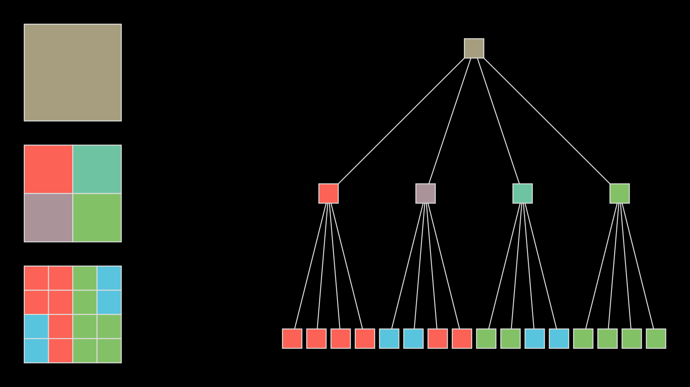

In the realm of computer science and data structures, the quadtree stands out as a robust and versatile tool for efficiently managing spatial data. Derived from the concept of recursive subdivision, a quadtree organizes two-dimensional space into hierarchical quadrants, enabling rapid retrieval, insertion, and deletion operations. This hierarchical structure begins with a root node representing the entire spatial area, which subdivides recursively into four equal quadrants until each node contains a manageable number of elements or reaches a specified depth. This approach ensures that spatial data is organized in a manner that optimizes computational efficiency and facilitates quick access to relevant information.
At its core, a quadtree efficiently manages spatial data through recursive partitioning. Each node in the quadtree can have up to four children, each representing a quadrant of its parent node's space. This division continues until further subdivision is impractical or unnecessary, ensuring that each leaf node contains a limited number of spatial elements. By structuring data hierarchically, quadtree enables efficient spatial queries such as range searches, nearest neighbor searches, and collision detection. This capability is particularly advantageous in applications where rapid access to spatial information is critical, such as geographic information systems (GIS), computer graphics, and gaming environments.
Quadtree finds diverse applications across various fields, demonstrating its versatility and utility in spatial data management. In computer graphics and image processing, quadtree structures are employed for efficient storage and retrieval of image data, facilitating tasks requiring spatial indexing and searching. In GIS applications, quadtree-based spatial indexing supports quick retrieval of information related to specific geographical locations, enhancing the efficiency of geographic data management and analysis. Moreover, in collision detection algorithms used in gaming, quadtree's ability to narrow down potential collisions to localized regions significantly improves computational efficiency and enhances overall game performance. Additionally, quadtree's effectiveness extends to data compression techniques, particularly in scenarios where efficient storage and retrieval of spatial data are paramount.
Quadtree offers several advantages that contribute to its widespread adoption and effectiveness in spatial data management. Firstly, it provides logarithmic time complexity for many operations, ensuring efficient management of large spatial datasets. This efficiency is crucial in applications where real-time responsiveness and scalability are essential requirements. Secondly, quadtree is highly scalable and adaptable, capable of handling varying levels of detail and resolution, from global spatial data representation to fine-grained local details. This adaptability makes quadtree suitable for a wide range of applications across different domains, accommodating diverse spatial data management needs. Lastly, quadtree's versatility is evident in its support for a comprehensive set of spatial queries and operations, including but not limited to range searches, nearest neighbor searches, and collision detection. This flexibility enhances the utility of quadtree in application development, enabling developers to implement efficient spatial data management solutions tailored to specific requirements.
In conclusion, the quadtree stands as a foundational and indispensable data structure in computer science, offering efficient spatial data management through recursive subdivision. Its versatility, scalability, and efficiency make it a preferred choice in applications requiring rapid spatial indexing, searching, and management. Whether applied in computer graphics, GIS, gaming environments, or data compression techniques, quadtree continues to demonstrate its value by optimizing computational efficiency and enhancing performance across diverse spatial data management tasks. As technology advances and spatial data requirements evolve, the quadtree remains a reliable and effective solution for optimizing spatial data management and facilitating innovative applications in various fields.